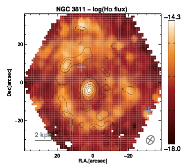
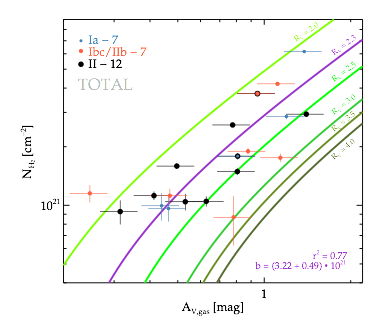
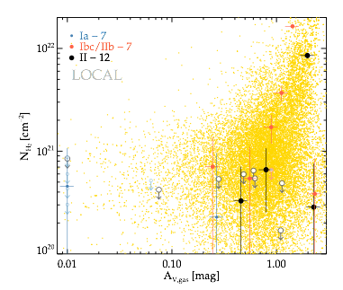

Research projects in which I have been involved

Supernova environments unveiled by EDGE
  Hα emission maps for the 20 galaxies studied in this work with CO intensities superposed in contour levels. Each contour represents the 2, 7, 15, 30, 45, 60 ,75 , and 90 % level, respectively, with respect the maximum emission. The CARMA beam size for each map is shown in the lower right corner of each box. SN positions are marked with blue crosses.
Molecular column density, N(H2), with respect the optical extinction derived from the H Balmer decrement, AV , for the integrated measurements of our galaxy sample. The slope of the linear fit (in purple) to the data gives the relation between the two parameters. The corresponding slopes for different values of RV are shown. Our data shows a preference for RV=2.3, a value lower than the average MW standard.
Molecular column density, N(H2), with respect the optical extinction derived from the H Balmer decrement, AV , for the measurements at the SN positions, where solid points indicate actual measurements and empty points represent upper limits. In the background a cloud of measurements for all individual positions in all 23 galaxies.
Combining optical Integral Field Spectroscopy data from the CALIFA survey and millimetric CO observations from the EDGE survey, we compare for the first time star-formation and extinction proxies from the SN environment with those measured from SN photometry and spectroscopy.
Type Ia supernovae (SNe Ia)


SDSS J020932.73-005959.8
Image of SN 2007qd (denoted by arrow) relative to its host galaxy. The 90s unfiltered exposure was taken on MJD 54409.08 with the TNG telescope.
- SDSS SN Survey follow-up @TNG (html)
- The peculiar SN Iax 2007qd (html, paper)
- Using GCD as a proxy for host galaxy properties (html, MLCS, SALT2, paper)
- Defining peculiar type Ia SNe (html, paper)
- Dependence on aperture corrected host galaxy properties (html)
- The effect of the elemental abundance on the luminosity of SNe Ia (html, paper)
- Spectroscopic follow-up of SN 2014J (html, paper-I, paper-II)
Optical INT and WHT spectra of SN 2014 can be found here
- DES SN Survey follow-up @Clay&GeminiS (html)
Type II supernovae (SNe II)

First eigenvector describing the morphology of type SNe light-curves, multiplied by the scatter of the training data. Typical IIP and IIL shapes are the extremes of this continuous sequence
- PCA of V band SN II light-curves (html, paper)
- Measuring distances using only photometry (html, paper)
- UBVRIz light-curves of 51 SNIIe (html, paper)
Machine-readable files can be found here
- Characterizing multiband SN II light-curves (html)
- SN II as metallicity probes (paper)
- The rise time of type II SNe (html, paper)
- Dependence on aperture corrected host galaxy properties (html)
Integral Field Spectroscopy of SN host galaxies (IFS)

Two dimensional map of the H-alpha emission in the field-of-view of the PPAK instrument, for the NGC0776 galaxy. ‘x’ represents the galaxy center, and ‘+’ the SN 1999di position
- IFS of SN host galaxies from the CALIFA Survey (table, DR3)
- I. Presentation and Star Formation (html, paper)
- II. Environmental metallicity (html, paper)
- CO studies in millimeter wavelengths (html)
- Optical survey of SN remnants (html)
- The All-weather MUSe Integral field Nearby Galaxies - AMUSING (html)
- Constraints on the metal mixing scale (html, paper)
- Characterizing SN environments (html, paper)
- Connecting SN with their environments (html)
2D maps in FITS format used for these studies can be found here
- Aperture corrections for spectroscopy (html, paper-I, paper-II)
- Dust extinction studies (html)
- SN progenitor Delay Time Distribution (html)
Other transients

Image series showing the discovery of a SN (SNHiTS15D). 1st row: images every 1:40h. 2nd row: reference image. 3rd row: difference
- High-cadence Transients Survey - HiTS (html)
Instrumentation

-CCD testing of DECam (html)
- OCTOCAM
-SOCKS
Observing proposals in which I have been involved
- 2016B: LCO. The HiTS Survey: real-time detection of stellar explosions (PI: Förster)
- 2016B: LCO. The first NIR spectroscopic study of high-z (z>0.5) SNIa host galaxies (PI: Galbany)
- 2016B: LCO. New Approaches to SN Standardisation for Cosmology (PI: Galbany)
- 2016B: DES/GEM. New Approaches to SN Standardisation for Cosmology (PI: González-Gaitán)
- 2016B: ESO. The All-weather MUse Supernova Integral field Nearby Galaxies (AMUSING) survey IV: Reducing the scatter in the NIR SN Ia Hubble diagram (PI: Galbany)
- 2016B: CAHA. Reducing the scatter of SNIa standardization in the NIR (PI: Galbany)
- 2016A: LCO. HiTS: High cadence Transient Survey, real–time detection of stellar explosions. (PI:F. Forster)
- 2016A: LCO. Probing the CSM interaction and mass loss history of interacting supernovae via late-time spectroscopy (PI: Kuncarayakti)
- 2016A: ESO. Observations of the lowest-metallicity type II supernova and its host galaxy (PI: Anderson)
- 2016A: CAHA. Constraining supernova progenitors using the narrow Na absorption (PI: Galbany)
- 2016A: ESO. The All-weather MUse Supernova Integral field Nearby Galaxies (AMUSING) survey III: Constraining SN progenitors through understanding the origin of NaD features (PI: Anderson)
- 2015B: ESO. The All-weather MUse Supernova Integral field Nearby Galaxies (AMUSING) survey II: ASAS-SN supernova rates with respect to environment properties (PI: Anderson)
- 2015B: LCO. New Approaches to Supernova Standardisation for Cosmology (PI: González-Gaitán)
- 2015B: DES/GEM. New Approaches to Supernova Standardisation for Cosmology (PI: Galbany)
- 2015B: CAHA. IFS of core collapse supernova environments in low-mass galaxies (PI: Galbany)
- 2015DTD: Observations of the lowest-metallicity type II supernova and its host galaxy (PI: Anderson)
- 2015A: CTIO. HiTS Follow-up: High cadence Transient Survey follow-up of stellar explosions (PI: F. Forster)
- 2015A: ESO. Rapid-ToO of extremely young supernovae from HITS (PI: F. Bufano)
- 2015A: CTIO. HiTS Follow-up: High cadence Transient Survey, real- time follow-up of stellar explosions (PI: C. Smith)
- 2015A: ESO. MUSE study of nearby core-collapse supernova host environments and parent stellar populations (PI: Kuncarayakti)
- 2015A: ESO. MUSE observations of SNIa environments: constraining progenitor properties, and refining distance calibration techniques (PI: Anderson)
- 2015A: CTIO. Understanding the progenitor diversity of Type II supernovae via nebular spectroscopy (PI: K. Takats)
- 2014B: ESO. Spectral characterisation of extremely young SNe and possible SBO events found by HiTS (PI: J. P. Anderson)
- 2014B: ESO. Constraining progenitor Z of SNII, and exploring the scope of their use as ISM Z probes throughout the Universe (PI: Anderson)
- 2014B: CTIO. HiTS: High cadence Transient Survey, real–time detection of stellar explosions. (PI:F. Forster)
- 2014B: ESO. Optical/NIR integral field spectroscopy of supernova explosion sites in nearby galaxies (PI: H. Kuncarayakti)
- 2014B: GEMINI. GMOS-S IFU spectroscopy of nearby supernova explosion sites (PI: H. Kuncarayakti)
- 2014B: ORM. Elemental gas-phase abundances on galaxies hosting type Ia supernovae (PI: M. E. Moreno-Raya)
- 2014B: LCO. Constrains on nearby supernova progenitors from IFU spectroscopy of the explosion site (PI: H. Kuncarayakti)
- 2014SV: ESO. Characterising the location of SNe within galaxies (PI: L. Galbany)
- 2014SV: ESO. Calibrating young simple stellar population (SSP) models with MUSE (PI: H. Kuncarayakti)
- 2014A: ORM. Elemental abundances on galaxies hosting type Ia SNe (PI: M. E. Moreno-Raya)
- 2007B: ORM. Observations of Type-Ia Supernovae discovered by SDSS-II (PI: R. Miquel)